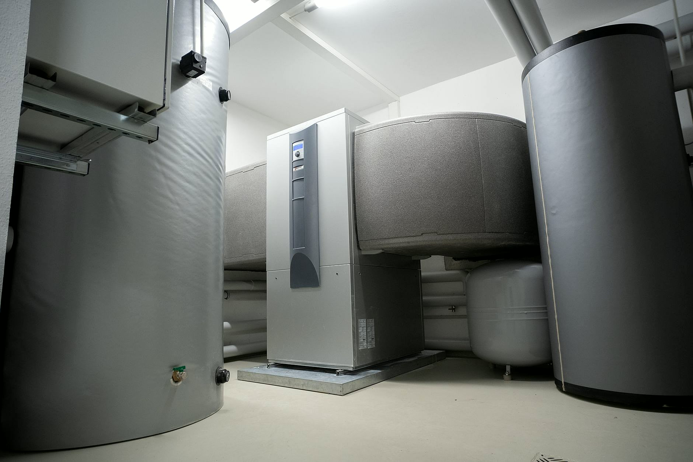
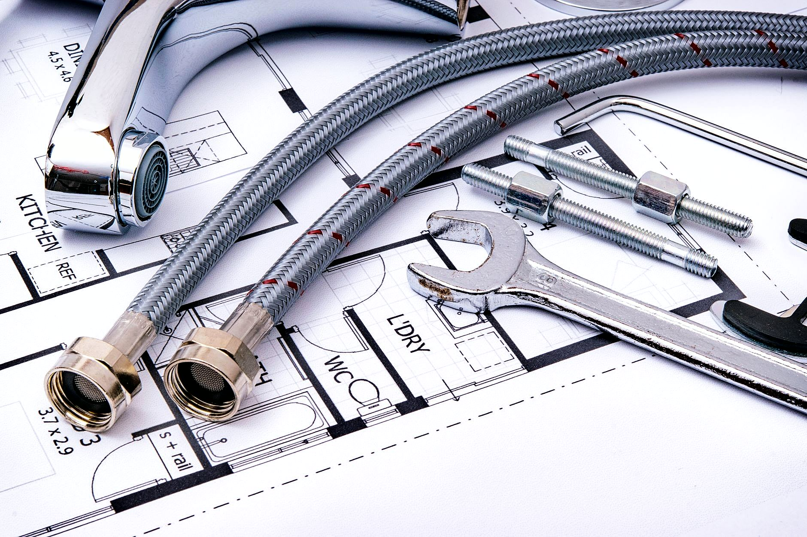

Czym się zajmujemy
Bierzemy całe instalacje, a nie pojedyncze usterki. Dom w budowie, budynek do modernizacji, wymiana kotłowni, przyłącze albo instalacja tryskaczowa w obiekcie: to nasza codzienna robota. Drobnych napraw i udrażniania rur nie prowadzimy.

Instalacje wod-kan w budynkach
Nowe instalacje wodne i kanalizacyjne w budynkach, wewnętrzne i zewnętrzne, oraz wymiana starych instalacji w różnych systemach. Prowadzimy je od pionu przez rozprowadzenie po punkty poboru, w standardzie pod odbiór.

Przyłącza i sieci wod-kan
Przyłącza wodociągowe i kanalizacyjne, budowa sieci wod-kan i kanalizacji deszczowej, modernizacja istniejących odcinków. Robimy część ziemną i połączenie z instalacją w budynku.

Instalacje gazowe
Projekt i wykonanie instalacji gazowej, przyłącza gazowe, montaż piecyków i kuchenek. Instalację prowadzimy zgodnie ze sztuką i dokumentacją, tak żeby przeszła próbę i odbiór.

Kotłownie i centralne ogrzewanie
Montaż i wymiana kotłów gazowych, olejowych, elektrycznych oraz na eko-groszek, wymiany całych kotłowni, rozprowadzenie centralnego ogrzewania, montaż i wymiana grzejników.

Instalacje tryskaczowe i hydrantowe
Systemy pożarowe w obiektach: instalacje tryskaczowe i hydrantowe, wraz z rozprowadzeniem rur i podłączeniem do źródła wody.

Centralne odkurzacze
Instalacja centralnego odkurzania: rury w stanie surowym, jednostka centralna i gniazda w ścianach. Najlepiej wchodzić z tym na etapie budowy albo większego remontu.
Która z usług Cię interesuje?
Napisz, co chcesz zrobić - odpowiemy z propozycją i wyceną.